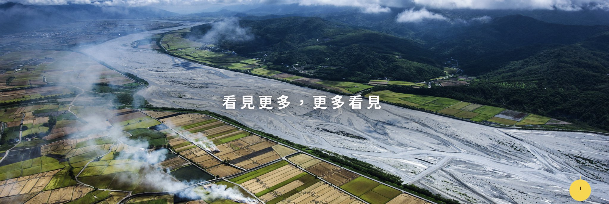

因過度的土地開發、引進外來物種及道路開拓導致棲地消失，除此之外，進入道路而遭車輛撞擊死亡的事件也層出不窮，再加上人為的毒殺、獸鋏，甚至是食用野味或迷信食補而宰殺，都導致面臨消失的危機。
瀕危物種是指物種由於濫捕、盜獵、環境破壞、數量稀少、棲地狹窄等種種原因而導致其野生種群在不久的將來面臨絕滅的機率很高。一個關鍵物種的滅絕可能破壞當地的食物鏈，造成生態系的不穩定，並可能最終導致整個生態系統的崩解。 許多國家有環境法以保護需要保護的物種，方式包括禁止狩獵、限制土地開發與建立保育區等。在依個體數量的生物體列表中可以看到物種的個體數量、變化趨勢以及保育狀態。
